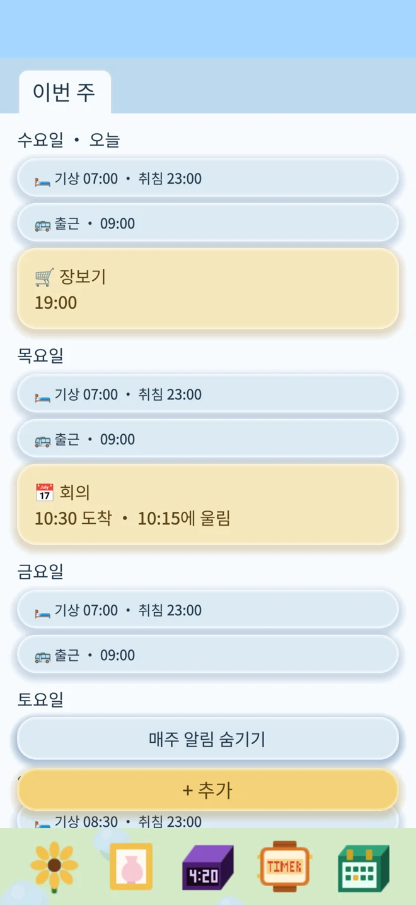
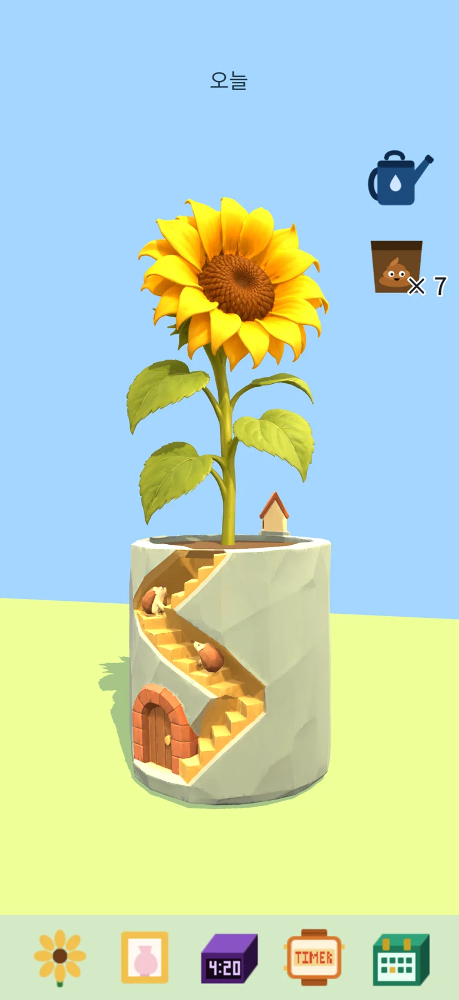
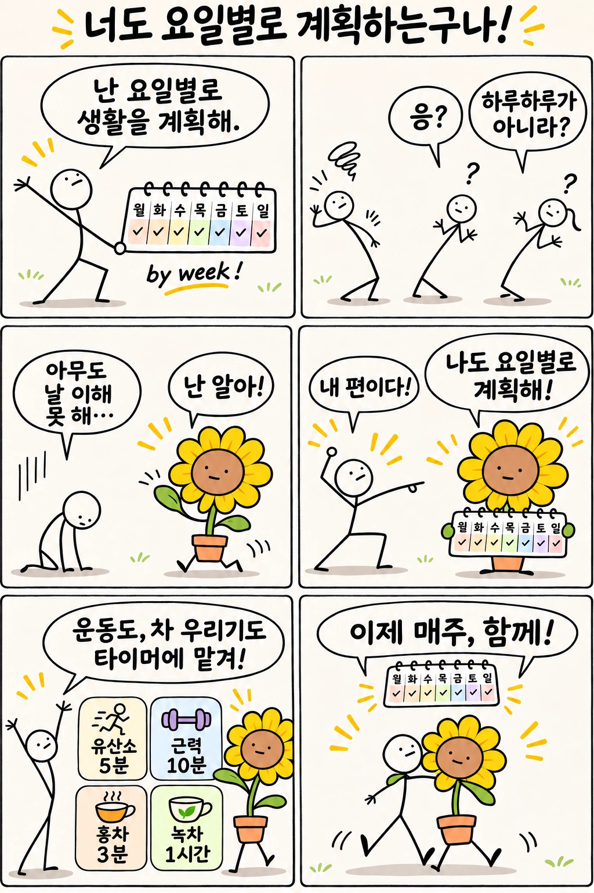
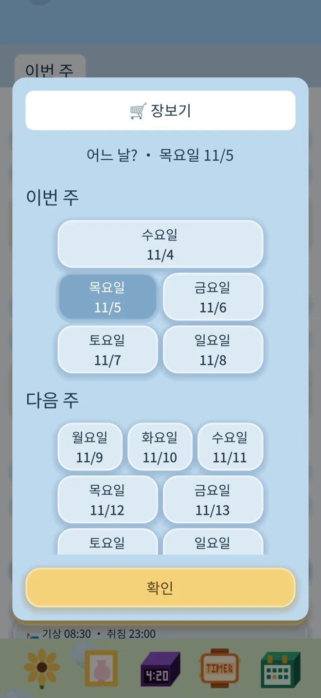
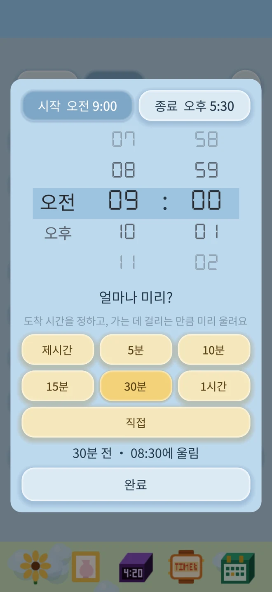
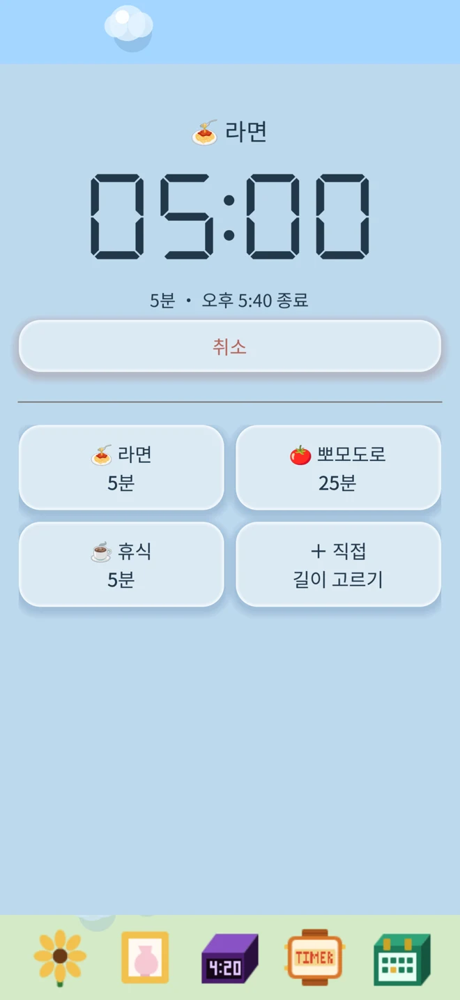

일정: 매주 반복되는 일도, 한 번뿐인 일도
이번 주, 다음 주, 그 이후의 일정을 주별로 확인해요. 파란 알림은 매주 반복되고, 노란 알림은 한 번만 울려요.
- 월요일부터 일요일까지 시간을 따로 설정해요
- 기상, 취침, 식사 등 매주 반복할 알림을 추가해요
- 특정 요일을 쉬거나 다음 알림 한 번만 건너뛰어요
- 주간 일정을 확인하고 한 번만 울리는 알림도 추가해요

요일별로 생활을 계획하는 사람을 위해 만들었어요.
「무슨 요일에 무엇을 할지」 정해 두는 편이라면, 작은 꽃 알람이 함께할게요. 월요일엔 출근, 수요일엔 아이 데리러 가기, 금요일엔 수업, 주말엔 조금 늦게 일어나기. 요일마다 할 일과 알림 시간을 정하면 매주 반복해서 알려 줘요. 계획이 바뀌면 한 번만 건너뛰세요. 다음 주엔 원래대로 울려요. 매주 반복되는 일정과 한 번뿐인 일도 일정 화면에서 함께 확인할 수 있어요.
광고도, 구독도, 인터넷 연결도 필요 없어요. 온전히 당신의 앱이에요.
알람, 리마인더, 꽃의 성장 기록은 기기에 저장돼요.
App Store에서 다운로드매일의 계획과 함께하는 작은 꽃 친구. 좋아하는 꽃과 화분을 고르고, 물을 주고, 톡 건드려 흔들리는 모습을 즐겨 보세요.
해바라기, 호접란, 군자란, 시클라멘, 칼랑코에와 삼색 고양이, 토끼, 고슴도치 오두막 화분을 골라 보세요. 비료를 줄 때 계속 키가 자라는 꽃은 해바라기뿐이에요.


이번 주, 다음 주, 그 이후의 일정을 주별로 확인해요. 파란 알림은 매주 반복되고, 노란 알림은 한 번만 울려요.



라면, 차, 잠깐의 휴식. 타이머를 고르고 확인하면 시작해요.
자주 쓰는 이름과 시간은 저장해 두고 다시 사용하세요.

나만의 꽃 돌보기
해바라기나 난초를 고르고 마음에 드는 화분과 짝지어 보세요. 물뿌리개를 끌어다 물을 주고, 비료를 끌어다 영양을 주세요.
오랫동안 물을 주지 않으면 고개를 숙이지만, 물을 주면 다시 기운을 차려요.
잠금 화면에서도
iOS 26 시스템 알람을 사용하며 알람 권한이 필요해요. 허용하면 무음 모드에서도 알람이 울려요.
진행 중인 타이머는 잠금 화면과 지원 기종의 Dynamic Island에 표시할 수 있어요. 시간이 다 되면 알림으로 알려 드려요.
내일의 알람을 맞추고, 오늘의 꽃에 물을 주세요.